Love Your Legs with
State-of-the-Art Treatments
Covered by Insurance.
Minimally invasive varicose and spider vein treatments with little to no downtime. Board-certified specialists in New York. Same-day procedures available.
We Accept Most Major Insurance Plans
Are Varicose Veins
Holding You Back?
You're not alone. Aching, heavy, or throbbing legs. Swelling that won't go away. Itching, burning, or restless legs at night. Visible bulging veins you feel self-conscious about in shorts, dresses, or at the pool.
The good news? Modern treatments can give you real, lasting relief — and beautiful legs you're proud to show again.
- Aching, heavy, or throbbing legs
- Swelling that won't go away
- Itching, burning, or restless legs at night
- Visible bulging or knotted veins
- Skin discoloration or hardening near ankles
- Self-consciousness in shorts or dresses
Are your legs achy, heavy, or swollen
with visible veins?
Those visible veins on your legs aren't just annoying — they're often symptoms of vein disease. This results in poor circulation, bulging leg veins, and chronic pain.
Recognizing these symptoms is the first step. Relief is closer than you think.
Get My Free EvaluationYour Path to Healthy, Beautiful Legs
From your very first call to walking out feeling lighter — we make every step effortless.
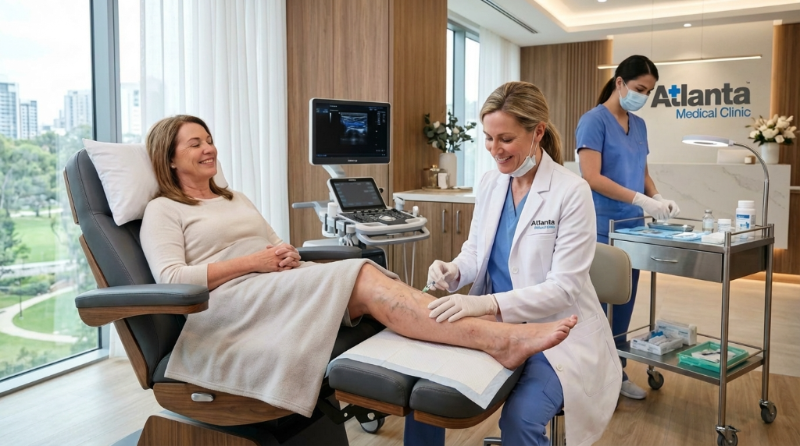
Free Consultation
Meet a board-certified specialist who listens, evaluates your symptoms, and answers every question — zero pressure, zero obligation.
30–45 min · No chargeUltrasound Screening
Painless vein-mapping ultrasound pinpoints exactly which veins need treatment and the best approach for your unique anatomy.
Included freeCustom Treatment Plan
Your specialist selects from VENCLOSE™ RFA, Varithena®, or Sclerotherapy/ClariVein® — tailored to your veins, lifestyle, and insurance coverage.
Insurance verifiedSame-Day Procedure
Most treatments take under an hour right here in our warm New York office. No hospital. No general anesthesia. Walk in, walk out.
Often same dayWalk Out, Feel Better
Legs feel lighter, look clearer. Most patients return to normal activities the same day — and finally feel free to show them off.
Zero downtimeAdvanced, Gentle Treatments
That Fit Your Life
Every treatment plan is personalized just for you — minimally invasive, effective, and designed around your schedule and lifestyle.
VENCLOSE™ Radiofrequency Ablation (RFA)
Minimally invasive alternative to vein stripping. A small catheter delivers RF energy to shrink, collapse, and seal the vein — no surgery, no scarring. Most patients return to normal activity within a day.
Varithena® Microfoam
FDA-approved microfoam injection that collapses problem veins and redirects blood flow to healthier veins. Reduces swelling, improves circulation, and delivers smoother legs — in under an hour.
Sclerotherapy & ClariVein®
Precise injections for spider veins and smaller varicose veins. A specialized solution is injected directly into the vein, causing it to fade and disappear. ClariVein® adds gentle mechanical agitation for enhanced results.
Actual before & after photos from Stem Regen Medical patients. Individual results may vary.
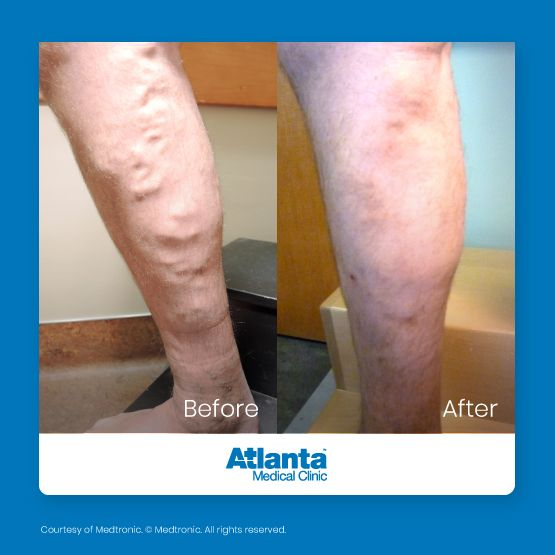
Varicose veins of the lower leg — visible bulging vein networks fully resolved following VENCLOSE™ RFA treatment.
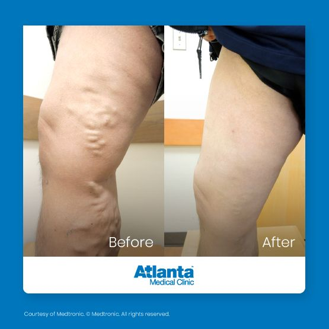
Extensive varicose veins across the thigh and knee area — dramatically improved following Varithena® microfoam treatment.
Could This Be
Your Result?
Most patients see significant improvement within 2–6 weeks. Schedule your free consultation and find out which treatment is right for you.
No obligation. Insurance accepted.
Courtesy of Medtronic. © Medtronic. All rights reserved. Images shown with patient consent. Results are not guaranteed and may vary.
Real Patients, Real Results
Actual outcomes from New York patients who finally got the relief they deserved — in their own words.
"Dr. Mandy is amazing, as is the rest of the team. I was nervous, but he made me feel completely comfortable. He explained everything in detail before and after — I couldn't be more pleased."
"Best decision I've ever made. Staff was knowledgeable and friendly. My procedure was virtually painless. Thank you for relieving my leg pain."
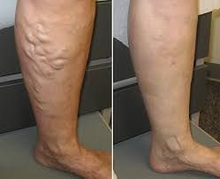
BEFORE AFTER"The staff here are very good. They give you the best attention and are very respectful. I recommend this clinic to the whole community and to all my friends."
"I was dealing with chronic leg and back pain that was affecting my sleep and daily life. Coming to Stem Regen Medical was the best decision I made. The regenerative treatment is non-surgical and the results have been amazing. The relief I've received and the genuine caring from the entire team is what I love most about this office."
The Longer You Wait,
The Worse It Gets
Vein disease is progressive. Without treatment, what starts as a few spider veins quietly advances — stage by stage — into serious, painful, and harder-to-treat conditions. The good news? Stopping it is easier than you think.
Small, web-like veins near skin surface. Often cosmetic at first — but a sign of vein pressure building beneath.
Twisted, bulging veins become visible. Legs ache, feel heavy. The vein wall is weakening and blood is pooling.
Fluid builds up in the lower leg. Ankles swell daily. Skin begins to discolor and harden. Pain becomes constant.
Open wounds that won't heal. A medical emergency. This stage can require hospitalization — and it's entirely preventable.
Treatment Today Prevents a Crisis Tomorrow
Most patients who come in early complete treatment in a single visit, walk out the same day, and never reach stage 3 or 4. Waiting costs more — in pain, in time, and in money.
- Early-stage treatment covered by most insurance
- 30–60 minute procedure, same-day results
- Board-certified specialists, New York's most trusted clinic
- Free consultation — no obligation, no pressure
Compassionate Care
You Can Trust
Stem Regen Medical has been New York and New Jersey's premier comprehensive clinic for over two decades — built on a foundation of genuine care, cutting-edge treatments, and a team that treats every patient like family.
-
Board-certified vein specialists Years of experience right here in New York, dedicated exclusively to vein health.
-
Personalized treatment plans Tailored to your unique needs, anatomy, and lifestyle — no one-size-fits-all approach.
-
Most insurance plans accepted We handle all the paperwork so you can focus on getting better.
-
State-of-the-art office A warm, welcoming environment designed to make you feel at ease from the moment you arrive.
-
Zero-downtime options So you can get back to living your life — your family, your activities, your freedom.
-
Thousands of happy New York patients Who finally love their legs again and live life without limits.
What Our New York Patients
Are Saying
Real words from real people whose lives have changed. Read what your neighbors in New York are saying about their experience with us.


"I started suffering with knee pain about a year ago. It was very hard for me to get around and climb stairs. Then I saw Stem Regen Medical's television commercial and decided to check it out. It was wonderful. Everyone was so helpful and nice. I now can climb stairs with no problem. I will recommend this facility to everyone."
"I've been suffering with knee pain for about a year. It held me back from working as walking became very difficult. My experience here has been great as I am back on my feet again. This treatment has improved my walking abilities as I can now walk without my walker."
"I dealt with pain and suffering with Neuropathy for the better of eight years. From poor sleep to daily discomfort as well as an inability to walk without pain. Now with the wonderful and friendly staff at Stem Regen Medical treating me, I am much more active and pain-free."


"I started suffering with back pains about three years ago. I was unable to walk or stand for extended duration. My doctor recommended surgery but I was totally against it. Then I saw Stem Regen Medical's TV commercial. It has been a very satisfying and encouraging experience. There has been a great improvement in walking and standing. Yes, I would definitely recommend this facility."
"Prior to coming to Stem Regen Medical, my condition was really limiting my life activities. I'm a very active person and my recreational activities had become substantially limited. I'm very glad I chose to come see Dr. Moalemi. The treatment was excellent and it truly took care of my needs."
"I had been suffering with migraines for one year. My quality of life was extremely difficult. I had been to many doctors and tried several different medications all without relief. After treatment with Stem Regen Medical my mood and activity level have improved considerably and my migraines are gone!! I feel great and I highly recommend Stem Regen Medical."
MD & FAAPMR
Steven S. Moalemi,
MD, FAAPMR
Medical Director & Founder — Stem Regen Medical
Dr. Steven S. Moalemi is a board-certified physician and Fellow of the American Academy of Physical Medicine and Rehabilitation (FAAPMR). With over two decades of clinical experience, he has established himself as one of New York's leading specialists in regenerative medicine, vein care, and non-surgical pain management.
Dr. Moalemi founded Stem Regen Medical with a singular mission: to offer patients the most advanced, minimally invasive treatments available — without the risks or recovery time of traditional surgery. He has personally treated over 5,000 patients using cutting-edge procedures including VENCLOSE RFA, Varithena microfoam, cellular therapy, and IV infusion protocols.
Meet Our Dedicated Team
Board-certified specialists, therapists, and coordinators — all here because they genuinely care about helping you feel better.
18+ years managing multidisciplinary practices; 13+ years in regenerative medicine.
Board-certified FNP with 16+ years RN experience; specialized in regenerative medicine.
BPT & MSc Kinesiology; orthopedic manual therapy specialist since 2011.
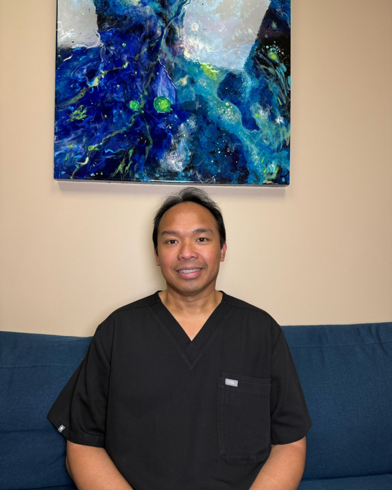
23 years across orthopedics, neurology, pediatrics, and geriatric rehabilitation.
Licensed PTA; extensive outpatient and inpatient rehabilitation experience.
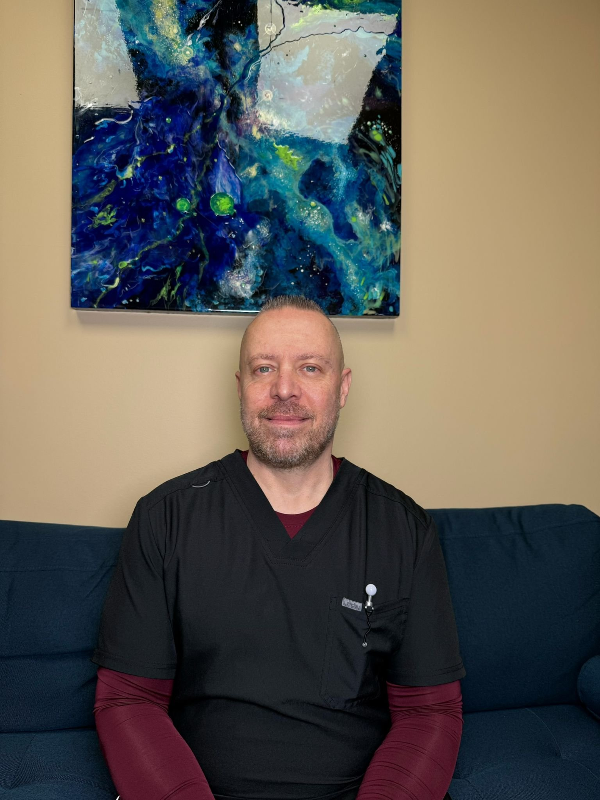
30 years outpatient rehab; certified corrective & performance exercise specialist.
30+ years of dedicated orthopedic rehabilitation experience.
25+ years in orthopedics, sub-acute, and geriatric patient care.
20 years of orthopedic massage therapy; Helma Institute graduate.
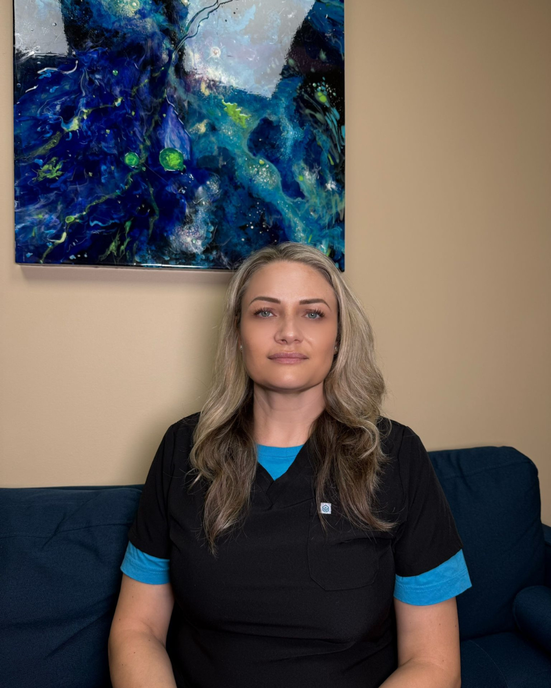
12 years therapeutic & sports massage; Academy of Massage Therapy graduate.
20+ years licensed in NJ & FL; master's in acupuncture, cosmetic & microneedling specialist.
8 years healthcare administration; sports medicine and orthopedics focus.
From Our Medical Blog
Knowledge is power. Explore patient education articles written by our board-certified specialists to help you understand your conditions and treatment options.
Complete Resource on Diabetes Prevention, Symptoms & Management
A comprehensive guide to understanding diabetes, recognizing warning signs, and how our specialists can help you manage it effectively.
Read Article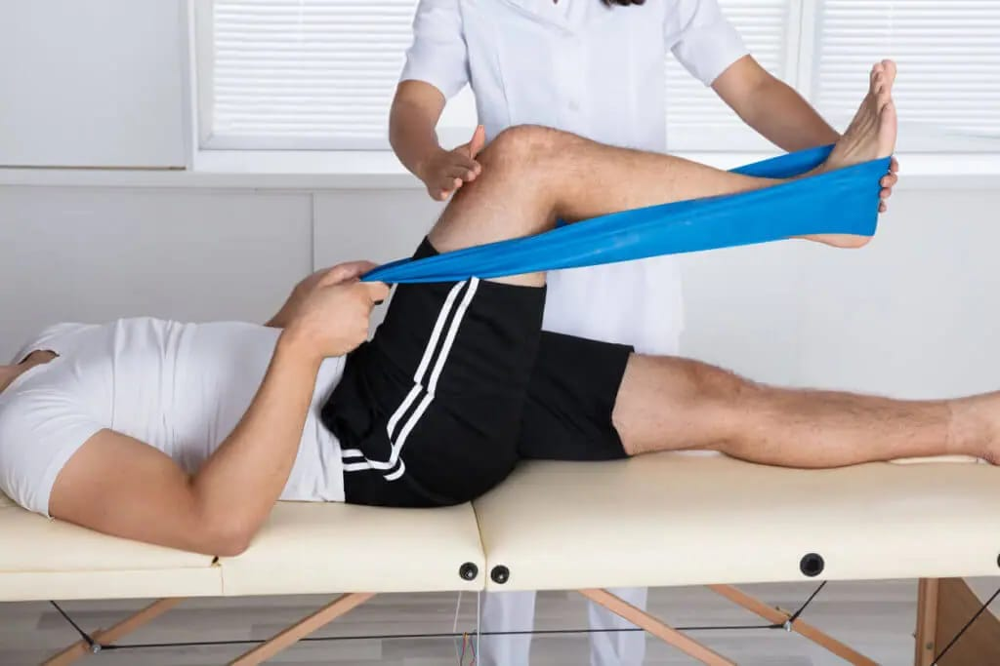
Comprehensive Guide to Knee Pain
From diagnosis to treatment, discover why knee pain happens and what non-surgical options are available at Stem Regen Medical.
Read Article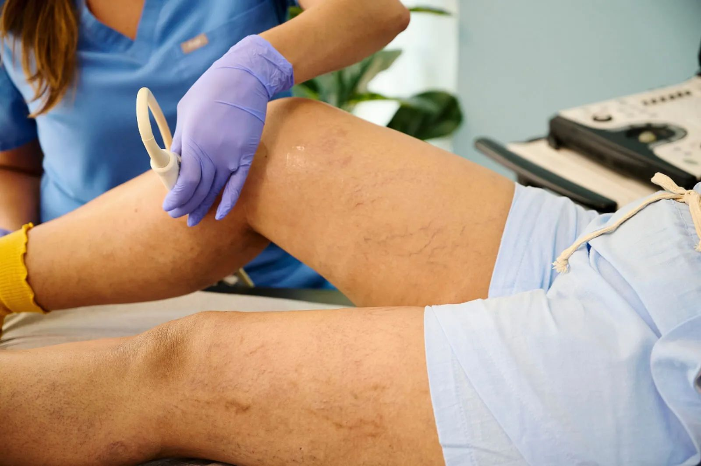
The Connection Between Poor Circulation and Chronic Pain
How vascular health directly impacts your mobility — and what you can do about it with help from our board-certified specialists.
Read Article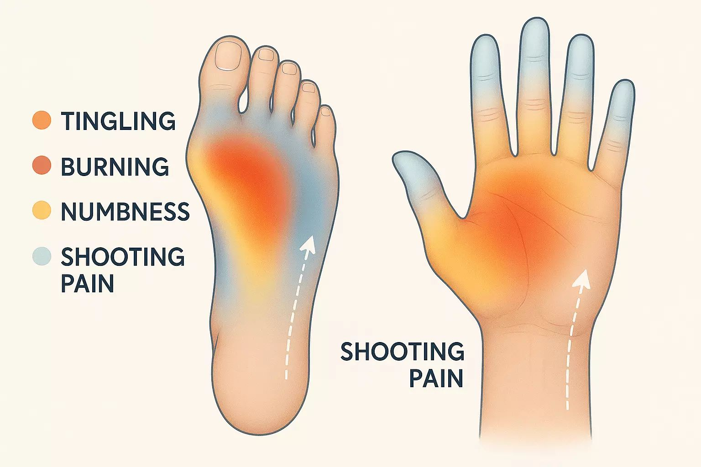
Do You Have Neuropathy in New York? Here's How to Recognize the Signs
Numbness, tingling, burning feet — learn the key signs of neuropathy and how to get effective, lasting relief in New York.
Read ArticleHow Knee Pain Can Throw Off Your Balance and Increase Fall Risk
Untreated knee pain affects more than just mobility — it raises your risk of falls. Discover how early treatment protects you.
Read Article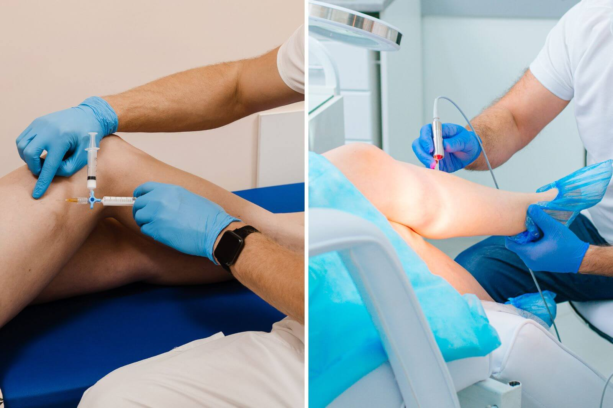
Spider Vein Removal in New York: What Treatment Is Right for You?
Not all spider vein treatments are the same. Find out which option best fits your lifestyle and symptom severity.
Read ArticleTake the First Step Toward
Healthier, Beautiful Legs
Your free consultation includes a thorough evaluation and ultrasound screening — at no cost and with no obligation. Just real answers and a clear, personalized plan designed around you.
Request Your Free Consultation
We'll confirm your appointment within one business hour.
Thank you! We received your request and will contact you within one business hour to confirm your free consultation.
Questions in the meantime? Call us at 877.744.0446